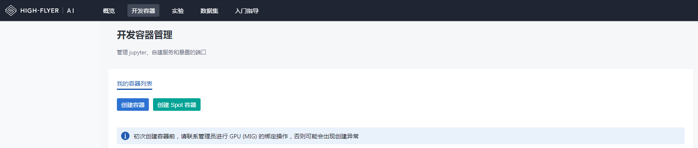

环境配置¶
运行环境是用户前期使用集群最关注的问题之一。 HAI Platform 提供两种方式配置环境：
使用
haienv调用 HAI Platform 默认环境（默认环境由集群提供）使用
haienv自建虚拟环境
这两种方式的区别如下：
默认环境 |
自建环境 |
|
|---|---|---|
使用方式 |
提交任务时指定默认环境 |
开发容器中用 |
是否支持自定义 |
不支持 |
支持扩展基础环境，或自定义虚拟环境 |
是否支持本地（集群外）使用 |
不支持 |
仅当本地环境与 HAI Platform 集群环境匹配时可使用，包括系统、GPU驱动、CUDA版本等 |
使用 haienv 调用集群默认环境¶
在集群提供基础环境并包含大部分主流依赖包的情况下，用户有如下使用方式： （建议用户在开始使用时先测试该环境是否可以满足运行需求）
不做代码更改，在使用
hai-cli python,hai-cli bash或hai-cli exec提交任务时，命令行中指定运行环境：HF_ENV_NAME=< base_env_name > hai-cli python sample.py -- -n 1 --name test_exp_1 HF_ENV_NAME=< base_env_name > hai-cli bash sample.sh -- -n 1 --name test_exp_1 HF_ENV_NAME=< base_env_name > hai-cli exec mybin -- -n 1 --name test_exp_1
在运行python代码中，使用
haienv加载运行环境：import haienv haienv.set_env('env_name')
在运行shell代码中，使用
source命令加载运行环境：source haienv < base_env_name >
使用 haienv 自建虚拟环境¶
在基础环境无法满足用户需求的情况下（比如python版本、依赖包等），用户使用 haienv 工具创建和管理个人环境。
通常建议用户直接从集群基础环境中扩展配置个人环境。这种方式是增量的，仅需要安装集群默认环境里缺少的依赖即可。扩展配置环境需要在开发容器中操作，开发容器从 Studio 功能入口进入，如下图所示：

HAI Platform 提供两种资源模式的开发容器
mig-gpu 开发容器 |
spot 开发容器 |
|
|---|---|---|
创建入口 |
||
资源分配 |
多个用户容器共享节点，每个容器绑定一个mig切分GPU |
每个容器独占一个节点（8卡） |
生命时长 |
默认24小时，活跃期间随时可续 |
无固定时长，根据集群资源需求随时回收 |
启动条件 |
用户配额内随时可启动 |
根据集群资源需求动态开放 |
注意：这种操作无法将配置好的环境拉取到本地，代码无法在本地进行测试调优。如果您需要 Debug 代码，可以在开发容器中执行。
具体的使用方式如下：
首先进入开发容器命令行，通过如下命令创建用户环境：
haienv create < myenv >
注意不加 --no_extend 命令表示从 HAI Platform 默认环境扩展构建用户环境，最大降低环境配置的工作量。环境创建后即可进入环境并执行自定义安装。
除此以外，haienv 支持用户在本地（集群外）建立个人环境并推送到集群，这种方式建立的环境无法扩展基础环境，需要用户自己验证和维护。
自建环境与集群默认环境使用方式相同，支持提交任务指定和代码中加载。